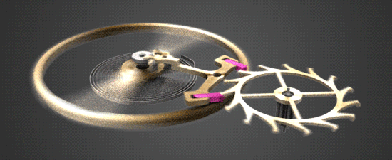
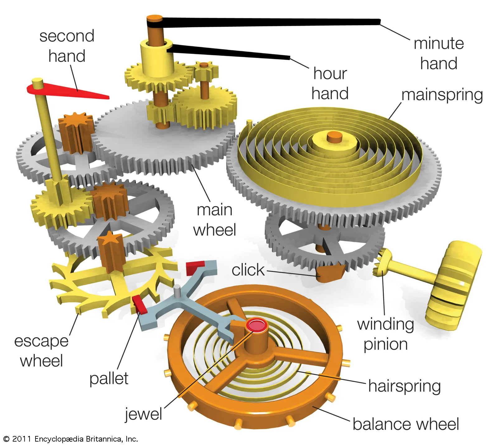
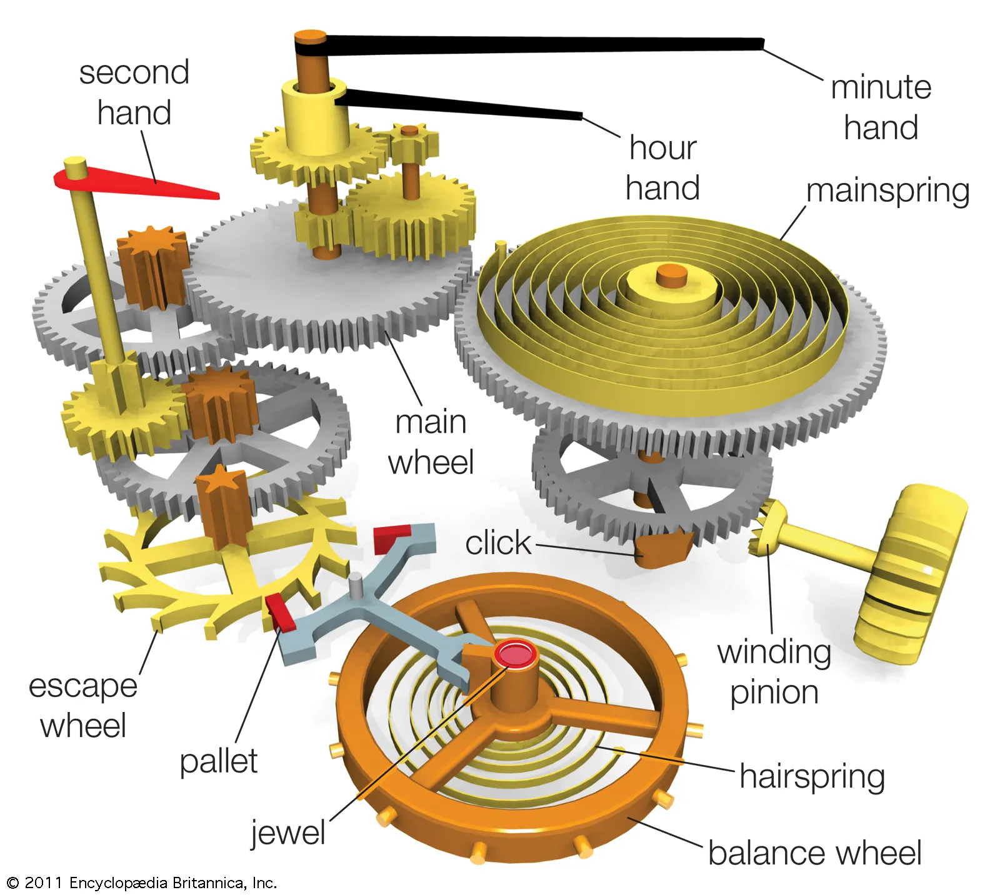

About Seiko
Seiko is a industry titan in the watchmaking space, based in Japan.
How Automatic Watches Work
Winding The Main Spring

Winding the crown stores the energy in the mainspring.

This energy will be gradually tranfered through the movement.

The energy is then stored in the escapement so it is not released all at once.
The rotating wheel of the escapement is called the balance wheel. It gradually releases the energy to the hands of the watch.
Overall View of a Movement
 
